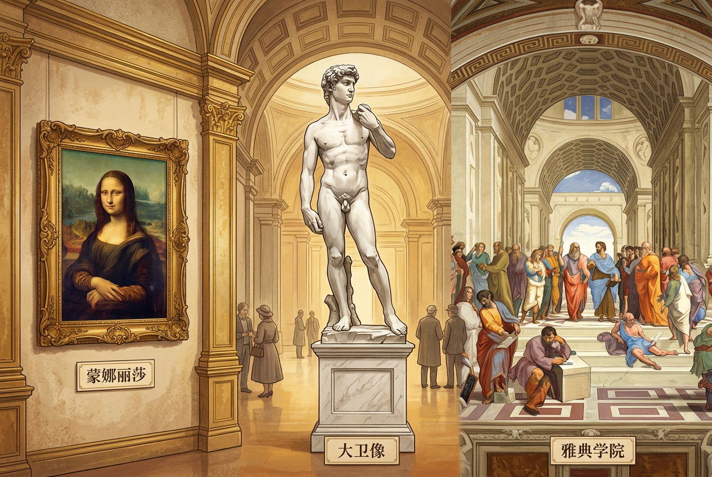
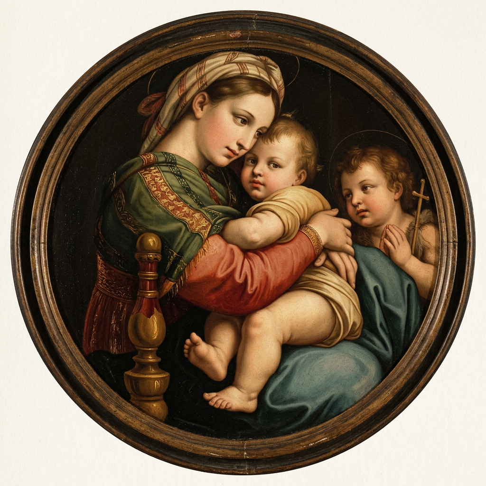
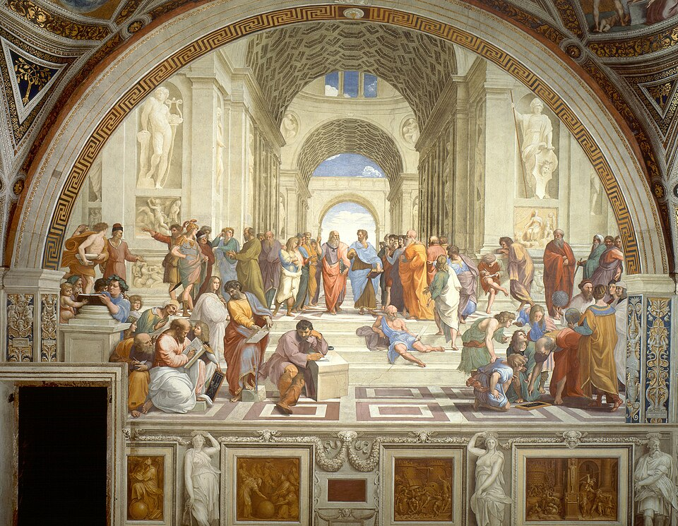

🎨一幅画引出一场革命
看下面这两幅圣母像——左边是中世纪的呆板版本，右边是文艺复兴拉斐尔《椅中圣母》。同样是圣母，画法为什么变了？
仔细看：中世纪的圣母像没有重力——衣纹僵直、表情程式化、母子之间没有眼神交流。她不是"一个女人"，而是"一个神圣符号"。
拉斐尔笔下的圣母却像一位真实的母亲：她侧坐在椅子上抱着圣婴，孩子伸手抓住她的衣领，目光里有温柔、有担忧、甚至有疲倦。
同一题材，画风为什么变了？——不是因为画家的技术变好了，是因为欧洲人开始重新看待"人"本身。圣母不再是高不可攀的偶像，她可以是一个有血有肉、会爱会累的母亲。这背后正在发生的，就是文艺复兴。
💡为什么要学这一课
中世纪欧洲教会权力很大，普通人活着是为了"来世进天堂"。你学过这是"黑暗时代"。
14 世纪开始，意大利人挖掘出古罗马雕塑、佛罗伦萨商人住进豪宅、有人把《圣经》翻译成德语贴在教堂门口——这些怎么解释？
一场"人重新发现自己"的运动开始了。它先在艺术里（文艺复兴），后在信仰里（宗教改革）——塑造了我们今天的世界观。
🏛️文艺复兴：核心是"人"
文艺复兴这个词字面意思是"重新出生"。出生的不是别的，是"人对自己的看法"。
什么是人文主义（Humanism）？三层含义
| 层次 | 中世纪的看法 | 人文主义的转向 |
|---|---|---|
| 看人 | 人是有罪的、卑微的 | 人是有尊严的、有创造力的 |
| 看现世 | 现世是受苦的，活着为来世 | 现世值得享受、值得探索 |
| 看理性 | 真理来自教会和《圣经》 | 人可以用理性独立认识世界 |
记住"三 R"：Re-discover（重新发现）+ Real-world（现世）+ Reason（理性）。
🎭 文艺复兴三杰（Florentine Trinity）
点击卡片看代表作品。
列奥纳多·达·芬奇
米开朗基罗
拉斐尔

📚 细看四大代表作
这四幅/件作品是文艺复兴艺术的标志。仔细观察画面细节——你会看到"人"如何从中世纪的呆板符号，变成活生生的人。

注意她的微笑——达·芬奇花了 16 年修改这一表情。嘴角似笑非笑，眼神有神秘又温柔。这是"人可以有复杂内心"的视觉化。
图源 Wikimedia Commons · 公有领域

圆形构图的圣母画。她侧坐抱着圣婴耶稣，旁边是幼年施洗者约翰。对比中世纪的金箔圣母像，这里没有神圣背景——她就像一位真实的年轻母亲，目光里有温柔、担忧、甚至疲倦。
教学重现插图（AI 生成）· 原作见皮蒂宫

5.17 米高的纯白大理石雕像。刻画的是大卫即将与歌利亚搏斗的瞬间——眉头紧锁、肌肉紧绷、目光锁定远方。人体重新成为美的对象（这在中世纪是不可想象的）。
图源 Wikimedia Commons · 公有领域

文艺复兴对古典的"集体致敬"。画面中心是柏拉图（指向天空，指向理念世界）和亚里士多德（手心向下，指向现实世界）。旁边还有苏格拉底、毕达哥拉斯、欧几里得、托勒密等古希腊哲人。
这幅画本身就是文艺复兴精神的宣言：希腊罗马不是被埋葬的过去，而是可以对话的思想源头。
图源 Wikimedia Commons · 公有领域
⛪宗教改革：让信徒直接面对上帝
如果文艺复兴让人重新发现"自己"，那宗教改革让人重新决定"自己和上帝的关系"。
1517 年 10 月 31 日，威登堡
导火索：教皇为了筹钱重建罗马圣彼得大教堂，派人到德国出售"赎罪券"——号称买了券就能让死去的亲人少受地狱之苦。
一位 33 岁的修士兼大学教师马丁·路德写了 95 条论纲，钉在威登堡城堡教堂的木门上。他原本只是想和神学家们辩论几个问题，结果——印刷术把这张纸传遍了整个德国。

路德到底说了什么？三个核心主张
- 因信称义——人得救靠信仰，不靠买赎罪券，也不靠教皇的中介。
- 《圣经》是唯一权威——不是教皇说什么算什么，是《圣经》写什么算什么。
- 人人皆可成为祭司——每个信徒都可以直接读《圣经》、直接面对上帝，不需要神父代祷。
💡 关键点：路德把《圣经》翻译成德语。这意味着普通德国人第一次能自己读懂《圣经》——这一行为本身就是革命。
🖨️ 互动模拟：印刷术让 95 条论纲传播多快？
拖动滑块改变印刷机数量，看 95 条论纲在德国扩散需要多少天。
历史对照：在 1517 年的德国大约有 200 台印刷机。这意味着 95 条论纲几周内就传遍全德国——而 100 年前的同类抗议（如胡斯）只能传 50 公里。没有印刷术，路德可能就只是一个被烧死的异端。
🗺️从佛罗伦萨到威登堡：观念的扩散
点击地图上的城市看它在这场运动里扮演什么角色。地图含 16 世纪欧洲疆域轮廓和地形底图——你能看到阿尔卑斯山如何分隔南北欧，也能看到德国诸侯林立的"政治空间"。
📅时间轴：从但丁到三十年战争
两场运动跨越 300 年，关键事件按时序梳理。
🧠 ConcepTest · 概念检测题
问题：为什么宗教改革爆发在德国，而不是文艺复兴的中心意大利？请选出最重要的一个原因。
💡 讨论提示：选 A 或 B 的同学，请和选 C 的同伴讨论 2 分钟，再回到这里点一次正确答案。这道题首测正确率约 35-50%——它正是为了引发讨论而设计的（30-70% 甜点区）。
🎯分层练习：你想走哪条路？
根据 ConcepTest 表现，系统推荐适合你的内容。也可以自己切换。
60 秒回顾：中世纪欧洲到底什么样？
👉 文艺复兴是对中世纪的反叛。要理解它，得先记住中世纪的三个特征：
- 教会权力很大 — 教皇可以废黜国王（卡诺莎之辱）
- 看人是消极的 — 人生来有罪，活着是受苦
- 知识被垄断 — 《圣经》只有拉丁语版，普通人读不懂
👉 看完上面三点，你应该能更轻松地理解：为什么"以人为中心"和"自己读《圣经》"会成为革命性主张。
worked example：判断一幅画属于哪个时期？
👉 我们一步步走：给你一幅画，怎么判断是中世纪还是文艺复兴？
- 看人物比例——中世纪人物常常不符合解剖学；文艺复兴恢复了真实比例。
- 看光影——中世纪是平涂的；文艺复兴有光影立体感。
- 看背景——中世纪背景常是金箔（象征天国）；文艺复兴背景是真实的风景。
- 看人物表情——中世纪表情程式化；文艺复兴有真实情感。
- 看主题——中世纪只画宗教；文艺复兴可以画神话、肖像、世俗生活。
✅ 关键洞察：判断一幅画的时代，看的不是画家技术好不好，是画家眼里"人"重不重要。
三道分层练习
练习 1（理解层）：下列哪一项不是文艺复兴的特点？
A. 重视人的价值 B. 反对教会权威 C. 推崇神学权威 D. 描绘真实世界
查看答案
✅ C。"推崇神学权威"是中世纪的特点。
练习 2（应用层）：路德的"因信称义"主张挑战了教会的什么核心权力？
查看答案
✅ 挑战了教会作为"上帝与人之间唯一中介"的权力。
练习 3（综合）：用一句话回答：文艺复兴和宗教改革有什么共同点？
查看答案
✅ 都强调"人"的主动性——文艺复兴让人重新发现自己的价值，宗教改革让人直接面对上帝。
反事实分析 + 跨时代延伸
问题 1（反事实，Bloom Analyze 层）
"如果古登堡没在 1450 年代发明活字印刷术，宗教改革还能成功吗？"请用历史证据论证。
提示与参考思路
切入点：对比 100 年前的胡斯（1372-1415）。胡斯也批评教会，但影响只有几个城市，最终被烧死。
有了印刷术后：1517-1520 年间路德著作印了 30 万份。
结论：思想力量需要传播工具放大——"媒介塑造历史"。
问题 2（跨学科迁移）
今天的"互联网 + 社交媒体"对于现代社会，相当于当年的"印刷术"对于宗教改革。请举一个具体例子说明这个类比。
问题 3（评判类，Bloom Evaluate 层）
有同学说："文艺复兴和宗教改革都是反封建反教会的，所以是同一场运动。"——这个回答漏了什么？
提示
漏了至少 3 点：（1）阶级基础不同；（2）针对对象不同；（3）后果不同（科学革命 vs 民族国家）。
🪞 五镜法回看 · 把这一课变成立体的
这一课最该带走的一句话：
人重新发现自己 → 人决定自己和上帝的关系 → 现代世界的起点
🎧音频播放器 · 课后反复听
所有讲解的 TTS 旁白汇总在这里，课后回家也能听。